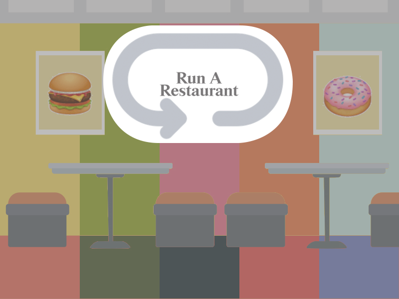

<html lang="en"> 
<head> 
    <meta charset="UTF-8" />
    <title>Accessible Game - Run a Restaurant (RaR)</title>
    <style>
    </style>
</head>
<body background="assets/startbackgound.png" style="width:800px;height:600px; background-repeat:no-repeat;">

    <!--  -->
    <a href="secondary.html"></a>
   <!--  <a href="one-itracker.html"></a> -->
    <a href="two.html"></a>

</body>
</html>